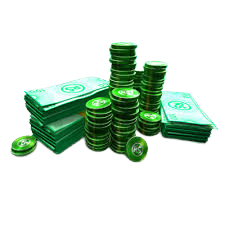
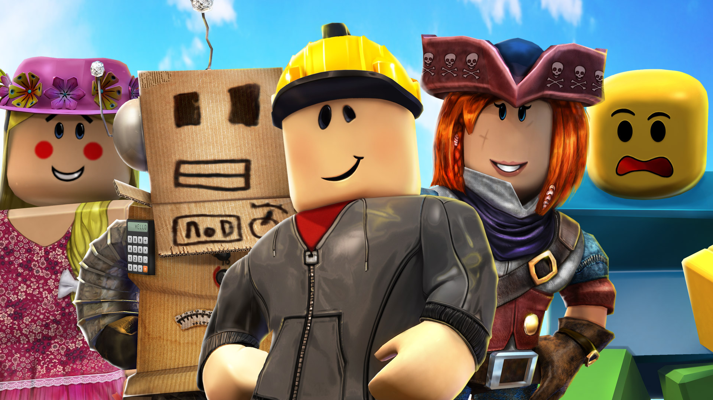

Приветствуютебя тебя, дружище, это сайт был создан для ознакомления с Роблоксом
Перемещение по секциям
Что такое Роблокс

Roblox — многопользовательская онлайн-платформа, которая позволяет пользователям создавать свои собственные и играть в созданные другими пользователями игры. Платформа содержит созданные пользователем игры и виртуальные миры, охватывающие широкий спектр жанров, от традиционных гонок и ролевых игр до симуляций и полос препятствий. По состоянию на август 2019 года Roblox имеет более 100 миллионов активных пользователей в месяц, обогнав Minecraft с 90 млн пользователей! Roblox позволяет игрокам покупать, продавать и создавать виртуальные предметы. Одежда может быть куплена любым игроком, но продавать её могут только игроки, имеющие подписку в Premium. Только администраторы Roblox могут продавать части тела, снаряжение и наборы частей тела под официальной учётной записью Roblox. C 2020 года делать аксессуары могут и пользователи с Premium. Предметы с ограниченным статусом могут продаваться только по каталогу или продаваться в Builder Club(нынешний Premium).
В начало
Что такое робуксы
Робакс, Робукс (англ. ROBUX), или R$ - единственная валюта в Roblox'е (начиная с 14 апреля 2016 года). Были добавлены в игру 14 мая 2007 года, как замена ROBLOX Поинтов. Робакс был одной из двух доступных на то время валют на платформе вместе с тикетами (стал единственной валютой 14 апреля 2016). Робакс известен как основная валюта ROBLOX сообщества и сотрудников; все On-Sale предметы, созданные ROBLOX'ом продаются за робаксы, и также контент, созданный пользователями, такие как Геймпасс, Одежда также покупаются на них. Название Рoбакс - сложносоставное понятие, образованное от слов "ROBLOX" и "Бакс" (англ. Доллар).
В начало
Что такое робуксы
Бета-версия Roblox была создана соучредителем Дэвидом Басзуки в 2004 году. Басзуки начал тестировать первые демонстрации в этом году. В марте 2007 года Roblox стал совместимым с COPPA, с добавлением безопасного чата, что ограничило пользователей в возрасте до тринадцати лет общением путём выбора предварительно определённых сообщений из меню. В августе Roblox добавил Клуб Строителей, премиум-подписку и усовершенствовали сервера. В декабре 2011 года Roblox провёл свою первую Hack Week, ежегодное мероприятие, на котором разработчики Roblox работают над инновационными нестандартными идеями для новых разработок, которые будут представлены компании. 11 декабря 2012 года Roblox выпустил версию игровой платформы для iOS. 1 октября 2013 года Roblox выпустил систему Developer Exchange, позволяющую разработчикам обменивать Robux, заработанный на своих играх, на реальную валюту. 31 мая 2015 года была добавлена функция, увеличивающая графическую точность рельефа и изменяющая физический движок с блочно-ориентированного стиля на более плавный и более реалистичный стиль. 20 ноября Roblox был запущен на Xbox One с первоначальным выбором из 15 игр, выбранных сотрудниками Roblox. Новые игры Roblox для этой консоли должны пройти процедуру утверждения и соответствовать стандартам Совета по рейтингу развлекательного программного обеспечения. В апреле 2016 года Roblox запустил Roblox VR для Oculus Rift. На момент выпуска более десяти миллионов игр были доступны в 3D. Примерно в то же время функция безопасного чата была удалена и заменена системой, основанной на белом списке с набором приемлемых слов для пользователей младше 13 лет и в чёрном списке для других пользователей. В июне компания выпустила версию, совместимую с Windows 10. C 28 августа 2019 года Roblox более не поддерживает Windows XP и Windows Vista.
В начало
- Почта для связи bogmira777@gmail.com
- By RBXFUN
- Профиль в роблоксе
В начало